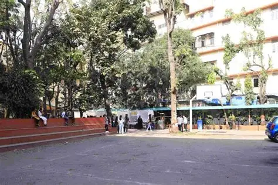

My Education Journey
The path that shaped my career in data analytics

2019 - 2023
Bachelor's Degree in Physics
RD and SH National College, Mumbai
Focused on statistical analysis, machine learning, and data visualization. Completed projects on predictive modeling, data mining, and business intelligence. Graduated with First Class Honors with a CGPA of 8.5/10.
Best Project Award 2022
Dean's List (All Semesters)
Physics
Chemistry
Mathematics
Foundation Course

2017 - 2019
12th Grade – Science Stream
Muljibhai Mehta International School, India
Completed my Higher Secondary (12th Grade) with a focus on core science subjects. Built a strong foundation in analytical thinking, problem-solving, and quantitative reasoning, which later helped me transition into data and analytics.
Distinction in Final Exams
Top performer in Mathematics
Active Member of Science Club
Physics
Chemistry
Mathematics
English
Computer Science